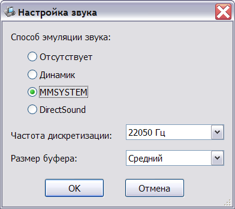

Встроенный динамик Агата или Apple ][ может быть сымитирован с помощью звуковой карты или встроенного динамика PC. При использовании звуковой карты в окне настроек звука может быть выбран тип устройства Windows: Windows Waveform Audio или DirectSound. Для большинства систем рекомендуется использование Windows Waveform Audio.
При использовании PC Speaker на системах класса Windows NT (2000, XP, Vista) необходима предварительная установка драйвера GiveIO (автор Dale Roberts) для обеспечения прямого доступа программы к портам ввода/вывода. Установка драйвера может быть произведена из программы установки эмулятора, либо программой installio из каталога drivers. Для установки драйвера необходимо обладать административными полномочиями. Установка осуществляется командой installio /i. Для удаления используется ключ /u. Из-за особенностей работы модуля эмуляции процессора, качество звука в режиме PC Speaker может быть значительно хуже, чем при выводе через звуковую карту, поэтому этот режим не рекомендуется для использования.
Выбор типа звуковой системы осуществляется в окне настройки звука:

Кроме выбора звуковой системы, для устройств Windows Waveform Audio и DirectSound имеется возможность задать частоту дискретизации и размер буфера звука. Поддерживаются следующие частоты дискретизации: 8000 Гц, 11025 Гц, 22050 Гц, 44100 Гц, 48000 Гц. Увеличение частоты дискретизации может повысить качество звука в некоторых программах. Размер буфера звука определяет величину задержки, возникающей между обращением эмулируемой программы к портам динамика и появлением звука в колонках компьютера. Увеличение размера буфера замедляет звуковой отклик, тогда как чрезмерное уменьшение размера буфера может ухудшить качество звука. Рекомендуется использовать средний размер буфера, приемлемый для большинства ситуаций.
См. также: Изменение конфигурации, Описание и настройка устройств, Поддерживаемое оборудование, Главное меню